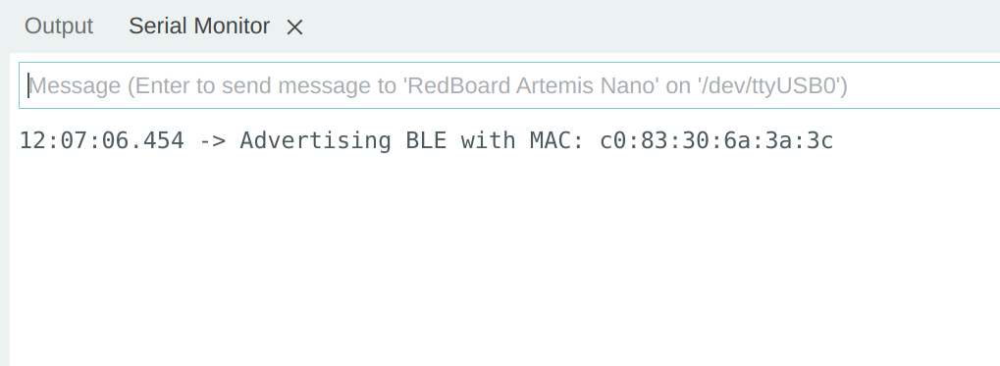
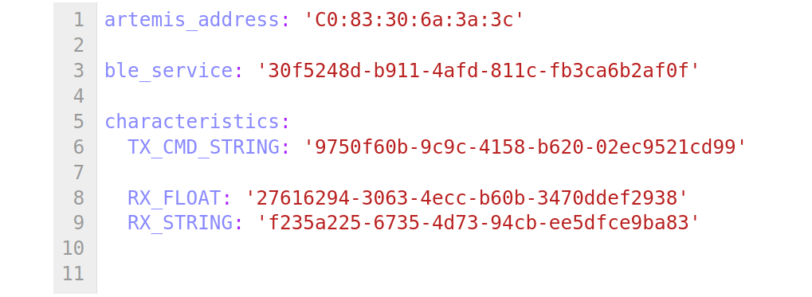

The purpose of this lab is to establish communication between computer and the Artemis board by using Bluetooth Low Energy (BLE). Skeleton codes of Python applied on computer end and Arduino programming language on the Artemis side are provided by the fantanstic teaching group with a detailed tutorial for setting up the lab environment and explaning the functions and libraries applied in skeleton codes.
Based on the provided functions, the working principle this communication protocal is learnt and more functions are developed to establish a framework for sending data via Bluetooth that will be useful in future labs.
This report gives a brief introduction of environment setup, followed by lab tasks demonstration with concise description.
Prelab
- Environment Setup
To establish a stable connection between computer and Artemis board, the required lab environment must be set up on the computer. I install both Python 3 and Arduino IDE on my computer based on Ubuntu Linux operating system following the commands provided by prelab tutorial, so that to make the it more convenient to program both computer side and Artemis board using the same computer.
A virtual environment named “FastRobots_ble” is created to isolate the Python interpreter, libraries and scripts needed by the project from the main system of the computer.
Eventually, the virtual environment is activated and the required Python packages are installed under virtual environment.
After setting up the lab environment, by implementing the provided codebase skeleton, the MAC address of Artemis board is printed on the Serial Monitor.
To differentiate different kinds of data sent between the Artemis and computer, a new UUID (Universally Unique Identifiers) is generated and modified in the 2nd line of configuration file.
- Codebase Explanation
Bluetooth LE sends data in a relatively low speed with low energy consumption using radio waves. Based on UUID match, computer and Artemis can build connection by BLE stably.
The codebase initializes the BLE service on the Artemis board based on UUID. It also provides functions to update characteristics when changes are detected, and function skeleton to help define user’s own functions, so that information transmission can be achieved.
Lab Tasks
In order to test robot’s sensors more effectively in future labs, it is critical to have a working wireless debugging system based on BLE service. The following tasks ensures receiving timestamped messages from the Artemis board.
Task 1: Echo Command
To verify the effectiveness of connection and message transmission ability between computer and Artemis. An ‘Echo’ function is developed to receive a string sent by computer on Artemis, then Artemis replies back to computer with an enhanced string which is printed on both computer side and Artemis Serial Monitor, as the video below demonstrates.
The provided ‘EString’ class in the codebase skeleton can handle string concatenation effectively, which helps to enhance the received string sent by computer on the Artemis side. Then the initialized ‘tx_characteristic_string’ can write the enhanced string to computer side.
Task 2: Get Time Command
This task is basically similar to the echo task, while the function ‘GET_TIME_MILLIS’ must be defined on both Artemis and computer side so that they can recognize the command. This function reads the current time since the Artemis onboard clock is started when the board boots up, and send the time back to computer. The time read from Artemis onboard clock is obtained using ‘millis()’ function. The transmission process is shown in video below.
As shown in the video, when the frequency generator changed the frequency, the printed frequency displayed on the screen detected by Artemis board changed correspondingly, despite there was a slight difference (only a few Hertz), probably due to FFT computation error in the example program. But in general, both the onboard microphone and the example program worked well.
Task 3: Notification Handler
Notification handler is a kind of callback function which enables automatically update of transmission process whenever the transmitted message changes. In this task, a callback function is defined on computer side to receive the string value sent by Artemis and decode the byte array to float type. The callback function can be implemented using ‘ble.start_notify’.
As video shows, every half second the string value changes, the callback function is called to decode it into float and print it out. Finally, the process can be suspended by function ‘ble.stop_notify’.
Task 4: Get Temperature Command
In this task, the temperature sensor on the Artemis is used to record current temperature once per second. The temperature data is sent after timestamp recorded by onboard clock. The function ‘GET_TEMP_5s’ is defined on Artemis to record time and temperature in a pair and send them to computer once per second individually, instead of sending the five recorded pairs as a single string to prevent exceeding characteristic size limit.
A new callback function is defined on computer side to receive the string and print it out as long as the string sent by Artemis changes. The video below demonstrates how this function works.
Task 5: Get Temperature Rapidly
This task is quite similar to previous task, while instead of having a five-second- sampling once per second, at least 50 pairs of readings are required within 5 seconds. Therefore, the delay time of each sampling process is modified to 0.1 seconds to have 50 pairs of readings in total within 5 seconds.
The function ‘GET_TEMP_5s_RAPID’ is defined on Artemis. Still, to prevent violating characteristic size limit, the string is cleared after each pair of ‘time|temperature' reading has been sent. After every 10 pairs of readings have been sent, there is a blank line appended to make the printed-out format on computer side more neatly.
The callback function for task 5 on computer side is basically the same as the one for task 4: as long as the string message received from Artemis has changed, callback function is invoked to decode and print out the reading. Video below demonstrates how it works.
Task 6: Limitations
16-bit (2 bytes) values taken at 150 Hz (1/150 s) within 5 seconds means 1.5 kb data in total. The Artemis board has 384 kB of RAM. Assume all of the RAM can be used to transmit data, then there are 256 sets (1280 seconds in total) of 1.5 kb data sampled in that way can be stored and sent in total before Artemis runs out of its memory.
Additional Tasks
- Effective Data Rate and Overhead
To calculate the data rate for 5-byte replies and 120-byte replies respectively, two similar functions to echo 5-byte string and 120-byte string are defined in Artemis and two callback functions are defined in computer side to receive the replies.
For both 5-byte and 120-byte replies, the transmission iterates for 30 times and the average transmission times and average data rates are computed. It needs to be noticed that both start time and end time of the transmission process are stored in lists respectively and transmission time is calculated by doing subtraction between the two lists.
The average transmission time and data rate for 5-byte replies and 120-byte replies are shown in video below.
As the video shows, there are basically no significant difference between transmission time of 5-byte replies and 120-byte replies (only 0.01s), while the data rate increases dramatically.
To further verify this trend, various reply sizes range from 1 byte to 140 byte are tested. As video shows, the experiment process is basically similar to previous tests for 5-byte and 120-byte, and eventually data rate for various data sizes are plotted as below.
The figure shows that despite fluctuations, generally, data rate increases as reply data size increases.

Due to these experiments, it is possible that transmission time is independent from data size, since for low byte replies, the data rate is lower as well, it can be deduced that smaller packets actually introduce more overheads. While for longer reply data size, the data rate is much higher, indicating that larger packets contain less overheads.
- Reliability
To test reliability of the transmission, a new function ‘reliability’ is defined on Artemis to receive ‘interval’ time from computer and hence provides reply to computer after a period of interval time.
A callback function is defined on computer side to receive and store all the replies sent from Artemis, so that to verify the accuracy of the replies.
As the video below shows, as interval time becomes shorter, the replies are sent back to computer at a higher rate from Artemis. Eventually, there all the data sent back are received correctly without missing anything. Therefore, the transmission is 100% reliable.
Texts and Videos by Zhongqi Tao